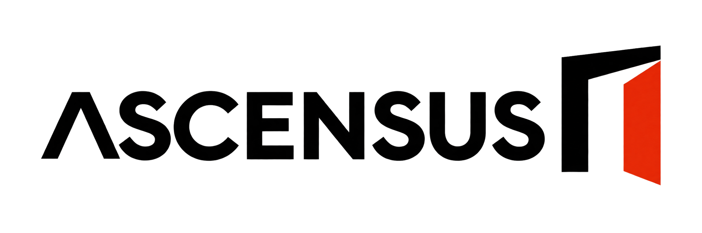

Ascensus · Logos por separado
PNG con fondo transparente. La dirección elegida es 01 Editorial.
01 Editorial · Elegido
02 Ritmo
03 Umbral

Exploraciones raster generadas con IA. No son archivos vectoriales finales.